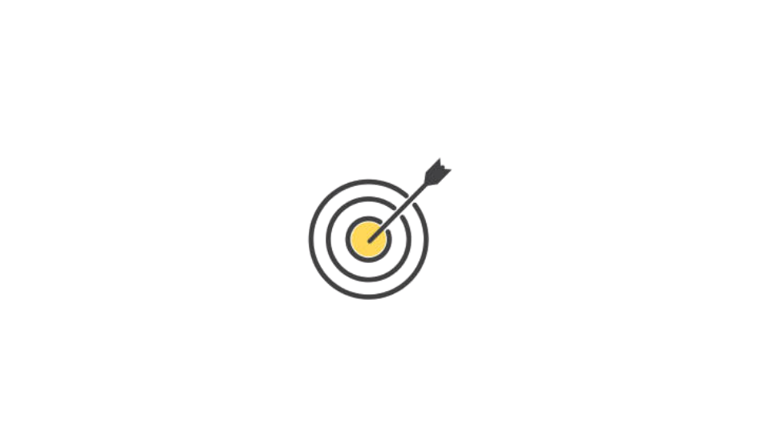

SOBRE INFRAWATCH
sistema de monitoramento de infraestrutura crítica voltado para servidores responsáveis pelo processamento de transações bancárias.
Nossa Equipe

Marina
Desenvolvedor e Analista

Leonardo
Analista e Desing

Anderson
Desenvolvedor

Kaue
Desenvolvedor e Analista

Caio
Desenvolvedor e Analista

Missão
Garantir controle térmico eficiente através da tecnologia.
Visão
Ser referência em análise inteligente no Brasil.
Valores
Inovação, qualidade, transparência e compromisso com o cliente.
Quem somos
Somos uma equipe de tecnologia que desenvolveu o InfraWatch, uma solução de monitoramento voltada para servidores responsáveis pelo processamento de transações bancárias. Nosso objetivo é utilizar monitoramento, automação e análise de dados para ajudar equipes de TI a identificar problemas rapidamente e manter os serviços bancários disponíveis e seguros.
Por que existimos?
Existimos para evitar que problemas de infraestrutura prejudiquem transações bancárias e seus usuários. O InfraWatch acompanha os servidores em tempo real, identifica comportamentos anormais e alerta a equipe antes que uma falha cause um impacto maior.